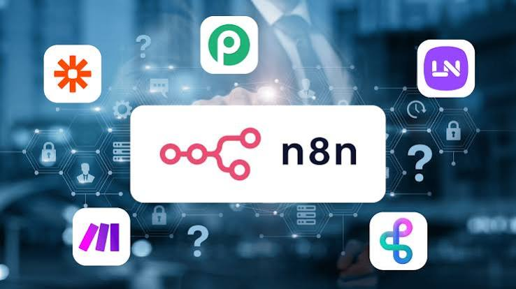
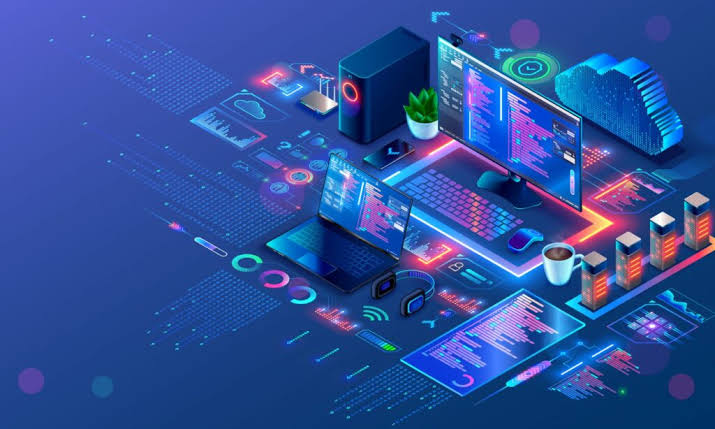

Implementamos workflows en N8N que eliminan tareas manuales y conectan todos tus sistemas. WhatsApp Business, CRMs, hojas de cálculo, APIs.
Workflows personalizados: Diseñamos flujos de trabajo a medida: sin plantillas genéricas. Cada automatización se adapta exactamente a tus procesos, sistemas y equipo.

Desarrollo de Software: Creamos soluciones tecnológicas que impulsen la eficiencia y la innovación en tu empresa.
Mantenimiento y soporte:Garantiza que tus aplicaciones funcionen de manera óptima a lo largo del tiempo.
Actualización y despliegue: Gestionamos todo el proceso de actualización y despliegue de manera eficiente.

Ayudamos a tu empresa a convertir la Inteligencia Artificial en resultados reales
Estrategia de Inteligencia Artificial: Analizamos tu negocio para identificar dónde podemos aportar más valor y diseñar una estrategia práctica con IA.
Agentes de IA para tu negocio: Adaptados a cada empresa para gestionar información, apoyar tareas del equipo y automatizar procesos de forma inteligente.
Automatización de procesos con IA: Eliminamos tareas repetitivas, optimizamos flujos de trabajo y permitimos que los equipos se centren en actividades de mayor valor.